Revisions, 10 Oct 2026. (1) Per ALMA, the original logo and identity are kept unchanged: the stencil ALMA/עלמא logo, black/white/grey, the ✦ sparkle and their tagline strip. The earlier proposed wordmark, red accent and serif typography were removed. (2) The layout is now built in a Bauhaus construction, in ALMA’s colours: thick black borders, hard offset shadows, colour-blocked sections and compositions of circles, squares and triangles. See “Construction” in section 03. The concept, site structure and copy are unchanged.
עלמא · ALMA
In Aramaic, alma means world. Every event ALMA produces is a world that exists for one evening. This proposal builds the brand on that idea. The line is עולם שלם. עד הדקה. (“A whole world. To the minute.”)
What exists (verified on almapro.co.il, 5 Oct 2026)
One-page WordPress/Elementor site (last modified 30 Nov 2025). About 60 words of copy in total.
Copy themes: ״מפיקים אחרת״ (“producers, differently”); a group bringing “a new spirit” to production; doing it “more right, more precise, more contemporary”; a “healthy, pleasant, professional” process. Seven event types: corporate, promotional, retreats, international, parties, conferences, exhibitions.
English lines: “TURNING VISIONS INTO MOMENTS OF STILLNESS”, “LET’S STAY CONNECTED”, “CREATIVE · PRODUCTION · EXPERIENCE · LOCATION”.
Media: 17 photographs and 4 Vimeo films (48–77s). From titles and visible branding, the identifiable projects are Discount Bank’s Purim 2025 event “המשתה” (video title + LED screens), Avène Soleil Retreat, MESS and MESS Gala, Orca Autumn Getaway and Remitly Spot the Summer.
Also shown, unlabelled: desert aerial, yoga hall, pool cabanas, concerts, an exhibition about the hostages, and President Herzog speaking at an event.
Contact: phone/WhatsApp 052-539-2032, Instagram @weralmapro, and a 3-field form (name, email, phone).
Logo: a constructed, stencil-like bilingual wordmark, ALMA stacked over עלמא, in black and white. One version sits in a half-stadium (arch) container.
What’s wrong
The evidence is unlabelled. The photography is varied and high quality, but nothing says what the project was, who the client was, or what ALMA did. A planner can’t tell a production from a venue shot.
The copy describes an attitude, not an offer. “New spirit” and “healthy process” don’t say what a client receives.
The headline line works against the work. “Moments of stillness” sits on top of lasers and festivals, in English, on a Hebrew site.
It claims people but shows none. The copy says “we are people who…”, yet there are no names and no faces.
There is no path to a decision. No services structure, no process, one generic form.
The logo is strong but under-used (judgement). The stencil ALMA/עלמא mark is distinctive, but the site gives it nothing to stand on: with no system around it, it reads closer to nightlife than to a company conference. Decision (per ALMA): the logo and original identity stay exactly as they are. The new system is built around them to widen their register, not to replace them.
Audience check
The brief assumes marketing, HR and executive decision-makers. The material supports HR / people teams (a bank’s holiday event, retreats) and marketing / brand teams (Avène, Remitly). Executive leadership is plausible: the conference photo and the exhibition point that way. But there is no labelled project to prove it, so it stays an assumption. A fourth group shows up too: culture and nightlife brands (MESS). The site uses them as proof of creative ambition rather than as a primary audience.
Opportunity. ALMA already has two things competitors can’t copy: a name that means world, and real work across corporate, brand and culture. The rebrand turns the name into the idea and the gallery into evidence.
Excluded on purpose
A different company. A web search returned אלמה הפקות (elmapro.co.il), a separate event company with its own founder and client list (banks, Amdocs and others). The search tool’s summary merged the two companies. None of that information is used anywhere.
The President Herzog photograph. Using a head of state in marketing implies endorsement. It needs ALMA’s context and permission first.
The hostages exhibition. It shows real people’s faces in a national tragedy. It must not be used as portfolio decoration. Whether and how to present it is ALMA’s decision, ideally with the organisers.
02 · Three creative directions
Three ideas. One is owned.
A · SELECTED
World-building
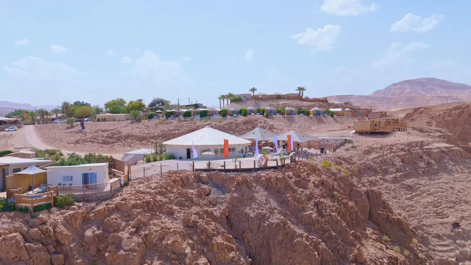
Idea
Alma is Aramaic for world. An event is a complete world, built for hours and gone by morning.
Client promise
One team builds your whole world: idea, production, experience and location.
Visual language
The arch, already in ALMA’s identity (the rounded logo container and the arch-cropped black-and-white photos in their one-pager): the dome of a world, sitting on a horizon. White, black, grey.
כל אירוע הוא עולם. אנחנו בונים אותו.
B
Two sides of the moment
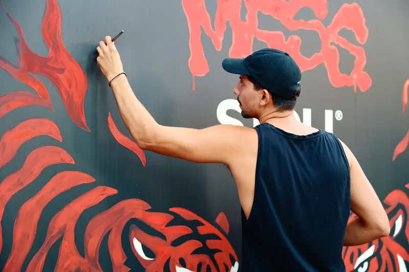
Idea
The brief’s hypothesis. Guests remember a moment; ALMA remembers every minute that led to it.
Client promise
You see the moment. We see the minute.
Visual language
Split frames (photo beside run-of-show sheet), mono timecodes, a red “tally” cue light.
האורחים זוכרים רגע. אנחנו זוכרים כל דקה שהובילה אליו.
C
The calm producer
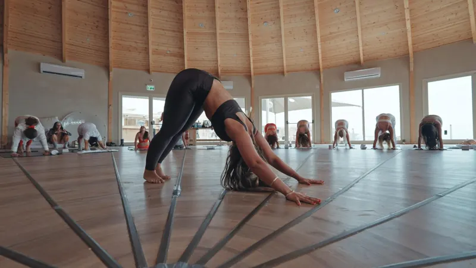
Idea
Builds on ALMA’s own “healthy, pleasant process” and “moments of stillness”. The real luxury is calm.
Client promise
A big production with a quiet process.
Visual language
Wide, still frames, generous whitespace, slow fades, soft neutrals.
הפקה גדולה. תהליך שקט.
Why A, carrying B
A passes the logo-swap test; B fails it. Every producer claims precision, so B on its own could belong to anyone. Only ALMA is called “world”.
A covers ALMA’s whole range. A bank’s Purim, a skincare retreat and a festival are all worlds. C suits retreats but argues with the laser photography.
A’s visual is inherited, not imposed. The arch already exists in ALMA’s logo container.
B’s best insight becomes A’s operating layer. The minute completes the line, עולם שלם. עד הדקה., and drives the system: minute-tick horizons and cue numbering, marked with ALMA’s own ✦ sparkle. C survives in the tone: “you are present in your evening, not managing it.”
03 · Brand system
The world, and the minute.
The signature is the Horizon: an arch (the world the audience sees) resting on a ruled line marked in minutes (the run of show the team sees). It is recognisable without the logo.
Logo: ALMA’s original, unchanged
The stencil ALMA/עלמא logo stays exactly as ALMA designed it: same artwork, same two versions (flat, and inside the rounded container). Nothing is redrawn. On the site, the original PNG is used as a mask, so the same artwork can be black on light, white on dark, or dark on their grey.
Flat version in the header (50px tall on desktop, 38px on mobile). Container version large in the footer. Their own favicon is kept.
Clear space: at least the height of one letter row on every side. Never on a busy part of a photograph, never recoloured outside black, white and #292927.
Still needed from ALMA: the vector source (SVG/AI/PDF). Only PNGs exist on the current site (2000px wide, sharp enough for screens, not for large print).
Colour: ALMA’s own monochrome
Kept from ALMA’s identity: white, black and the grey of their tagline strip. No accent colour is added. Their photographs carry all the colour, and black-and-white is used for the arch crops, exactly as in their one-pager. Every value below is either taken from their files or a neutral grey step needed for readable small text.
#FFFFFF
WhiteThe logo’s letters. Light sections.
#161616
BlackTheir site background. Text, buttons, night sections. 18.1:1 on white.
#1D1D1B
Logo blackThe ground of their logo file. Raised surfaces on dark.
#BFBFBF
Strip greyFrom their tagline strip, with its text colour #292927 (7.9:1). Bands, placeholders.
#666666
Meta greyAdded step: small text on white. 5.74:1.
#A3A3A3
Meta grey (dark)Added step: small text on black. 7.17:1.
Buttons and focus states work by inversion: black on light sections, white on dark ones. Nothing relies on colour alone to signal state.
Typography: matched to the logo (both families verified OFL 1.1)
The current site’s only web fonts are Elementor defaults (Roboto, Roboto Slab), not a brand choice. ALMA’s real typographic voice is the wide grotesk in their tagline strip, so the system follows that.
HEBREW
כל אירוע הוא עולם. Heebo (Hebrew + Latin, 100–900). Geometric and even, so it sits next to the constructed stencil logo instead of competing with it. Headlines run at Black 900 with tight tracking, the Bauhaus poster weight; one Light 300 line in the hero gives contrast.
LATIN LABELS
Creative Production Archivo, expanded (125% width): the closest free match to the font in ALMA’s strip, chosen by side-by-side comparison against eight wide grotesks. Replace it with the original font file if ALMA has it.
SEPARATOR
ALMA’s slanted four-point sparkle, redrawn as a small SVG from their strip. It marks cue labels and separates the strip words.
Type hierarchy
Role
Family / weight
Size (mobile → desktop)
Line height
Hero
Heebo 900 (first line 300), tracking −3.5%
42 → 90px (clamp 5.4vw)
0.95
Section title
Heebo 900, tracking −3.5%
34 → 77px
0.95
Card title
Heebo 600
22 → 30px
1.15
Lead
Heebo 400
18 → 22px
1.55
Body
Heebo 400
17px
1.65
Meta
Heebo 400
14px
1.5
Cue label / strip
Archivo Expanded 500 (Latin) / Heebo (Hebrew)
12px / 14–30px
1.2
Construction: Bauhaus, in ALMA’s colours
Every element is built rather than decorated, from three shapes (circle, square, triangle) and thick black lines. ALMA’s stencil logo is itself constructed from straight cuts and quarter-circles, so the construction extends the logo’s own logic instead of fighting it. Primary colours are not used: the three Bauhaus colour roles are carried by ALMA’s palette.
Bauhaus rule
ALMA version
Where
Red / blue / yellow colour blocks
Black #161616 / strip grey #BFBFBF / white with a dot grid
2px on mobile → 4px from 1024px, always black (white on black blocks)
Header rule, every section edge, frames, cards, inputs
Hard offset shadows
3/4 → 4/6/8px, no blur. They fall down-left, mirroring the usual down-right because the page reads right-to-left. Grey on black blocks.
Buttons (4px), cards (6px), hero arch, video frames, the form (8px)
Binary radius
0 or full. The arch is the one combined shape: a circle standing on a square.
Squares everywhere; circles for form chips, service numbers 01 and 04, the middle archive crop and one team slot
Geometric compositions
Hero: black circle behind the B/W arch, an outlined square rotated 45°, a triangle, a small white square. Name: grey circle behind עָלְמָא. Contact: faint circle and rotated square.
Hero panel, name section, contact block
Rotated elements
Process numbers sit in black squares rotated 45° with the numbers counter-rotated. Every third service number and type marker is rotated.
Process, services, event-type list
Accordion
Closed: white card, black border, shadow. Open: black header, white text, chevron flipped 180°.
Services
Images grayscale, colour on hover
Applies only on devices with hover; touch screens see colour. Arch crops stay B/W always, as in ALMA’s one-pager.
Work frames, videos, archive
Button press
Shifts 2px into its shadow, and the shadow disappears
All buttons, video posters, menu button
Outfit typeface
Not used: it has no Hebrew. Heebo 900 with tight tracking and leading plays the same role.
All headlines
Geometric shapes as the logo
Not used: ALMA’s own logo stays. The shapes live in the compositions instead.
Header, footer
Grid and spacing
12 columns, max width 1440px. Outer margin clamps from 16px to 56px; column gap from 16px to 32px. Mobile collapses to a single column with 16px margins.
8-point rhythm: 4 · 8 · 16 · 24 · 32 · 48 · 72 · 112 · 160. Sections breathe at 72–160px. Rhythm alternates energy (dark, image-led night sections) with stillness (white, type-led sections).
Asymmetry by default: text takes 4–7 columns and media 5–8. Content never sits centred in a box.
Image cropping principles
One arch per view. Reserve it for the frame that defines that world. Keep the photo’s horizon in the lower third so it lands on the arch base, and never cut a face at the curve.
21:9 panorama for scale and place: venues, crowds, landscapes.
3:2 for action: artists, stage, set-up.
4:5 for craft: hands, signage, set details.
Arch crops are black-and-white, as in ALMA’s one-pager. Every other crop keeps its real colour, with no filters or tints.
No caption, no publish. Every live image needs a project name and a photographer credit.
The motif in use
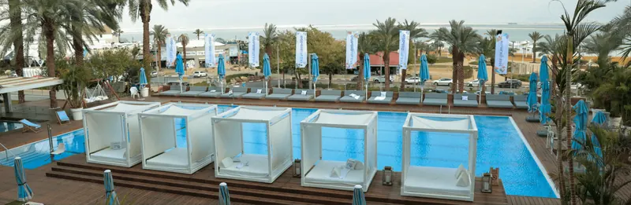
Website: hero, section dividers, process track
סדר הערבQ.1 18:00 ✦ Q.2 19:30 ✦ Q.3 20:15 ✦ Q.4 22:00Presentations and run-of-show (illustrative times)
במה ←
Event materials: wayfinding, badges, staff wear
Motion: mechanical
Pieces are set in place, not floated in. Every transition is 200–300ms with ease-out; the longest entrance is 600ms.
Arches open bottom-up (600ms clip). The hero’s shapes pop in one after another, like pieces placed on a board (scale 0→1, 120ms apart). Text rises 16px. Horizons draw in the reading direction.
Buttons press into their shadow. Cards and video frames lift 4px on hover. Photos turn from grayscale to colour on hover. The accordion chevron flips 180°.
Each element animates once, on entering the viewport. Nothing loops, background patterns are static, there is no scroll-jacking, and nothing delays access to content.
With prefers-reduced-motion everything appears instantly. Without JavaScript nothing is hidden.
04 · Architecture & homepage copy
From first impression to a conversation.
Sitemap
/ Home: Opening → The name → Selected work → Services → Process → People → Contact
/work index: add once more than six projects are documented. Until then, work lives on the homepage.
/team: only once real team content exists (homepage section until then).
/accessibility (הצהרת נגישות) and /privacy: required before launch. From memory, not checked here: Israeli accessibility regulations require a published accessibility statement for business websites.
Navigation: עבודות · מה אנחנו מפיקים · איך זה עובד · מי אנחנו · [בואו נדבר]. On mobile, a sticky call/WhatsApp bar appears after the hero.
Homepage copy (Hebrew, as built)
VERIFIED taken from ALMA’s site or media · PROPOSED new copy that needs ALMA’s sign-off · MISSING placeholder that will not ship
Section
Hebrew
English gloss
Status
Hero H1
כל אירוע הוא עולם. אנחנו בונים אותו עד הדקה.
Every event is a world. We build it, to the minute.
PROPOSED
Hero sub
עלמא מפיקה אירועי חברה, כנסים, נופשים, הפעלות מותג ומסיבות, בארץ ובחו״ל. רעיון, הפקה, חוויה ולוקיישן — אצל צוות אחד שמחזיק את כל הפרטים.
Services and scope restate ALMA’s own lists; “one team holding every detail” is new.
VERIFIED scope · PROPOSED claim
CTAs
ספרו לנו על האירוע · לעבודות שלנו
Tell us about the event · Our work
PROPOSED
Event types
אירועים עסקיים · אירועי קד״מ · נופשים · אירועי חו״ל · מסיבות · כנסים · תערוכות
ALMA’s own seven categories
VERIFIED
Q.01 Name
בארמית, עלמא פירושו עולם. וזה בדיוק מה שאירוע טוב הוא: מקום שקם לכמה שעות, עם אור, צליל, שפה ואנשים משלו — ובבוקר שאחרי נשאר רק במה שאנשים זוכרים.
The Aramaic meaning is a fact. We don’t know why ALMA chose the name, and the copy doesn’t claim to.
VERIFIED meaning · PROPOSED
Two sides
מה הקהל רואה: עולם אחד, שלם… / מה אנחנו רואים: לוח זמנים לפי דקות, ספקים, חשמל, הסעות, אישורים — ותוכנית ב׳ לכל אחד מהם.
Project names come from Vimeo titles and branding visible in the photos. Project descriptions only describe what is visible.
VERIFIED names · MISSING roles and years
Q.03 Services
מה אתם צריכים שיקרה? · ערב לעובדים · רגע למותג · כנס, תערוכה, במה · מסיבה, פסטיבל, חו״ל
Organised by the visitor’s need (HR / marketing / exec / culture), not by ALMA’s internal categories.
PROPOSED
Q.04 Process
מרעיון לאירוע, בחמישה קיוז. · שיחה · רעיון · תכנון · הערב · אחרי — כל שלב עם ״אתם מקבלים״
Each step names a concrete deliverable, e.g. a one-page brief, a closed budget and run-of-show.
PROPOSED must match how ALMA actually works
Q.05 People
״אנחנו אנשים שרוצים לעשות את זה נכון יותר, מדויק יותר, עכשווי יותר.״
ALMA’s own sentence
VERIFIED quote · MISSING team
Q.06 Contact
יש לכם אירוע בראש? ספרו לנו עליו.
Have an event in mind? Tell us about it.
PROPOSED
Footer line
עולם שלם. עד הדקה.
A whole world. To the minute.
PROPOSED
Voice rules: short sentences, each with something in it. Promise deliverables, not feelings. No “unforgettable”, “magical” or “dream event”. English appears only where it’s production language (run of show, cue) or a client’s own brand name.
05 · Designs
Desktop and mobile, built and rendered.
These are renders of the working prototype, not mock-ups. Open the homepage and the project page to use them live; “הצגת סימוני אימות” in the top bar highlights every unverified line.
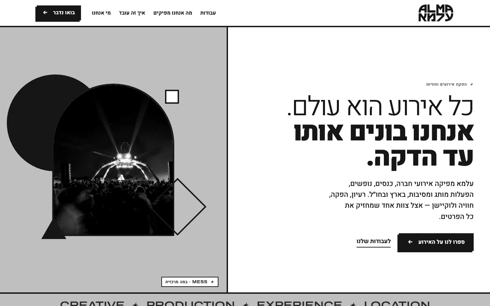
Desktop · opening
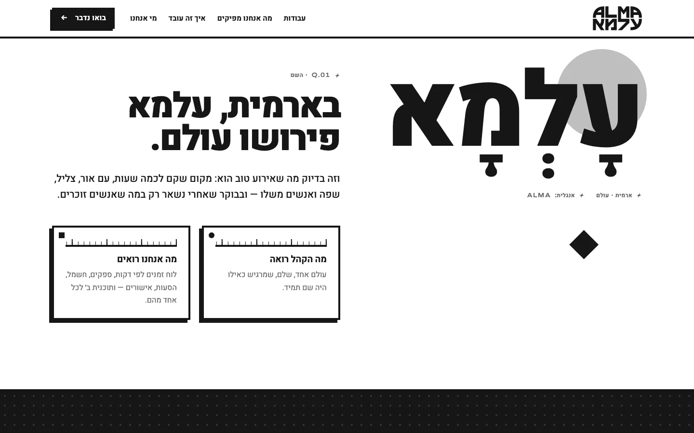
Desktop · the name
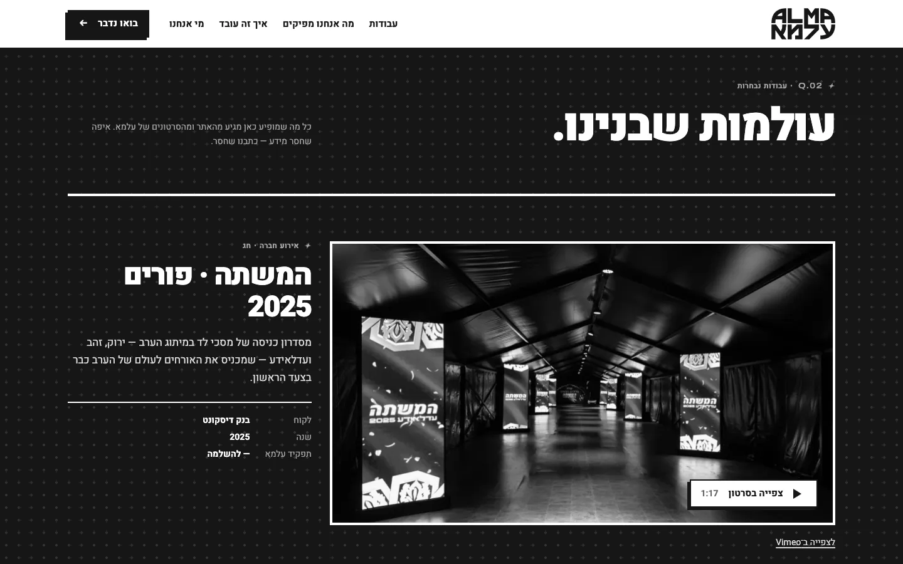
Desktop · selected work
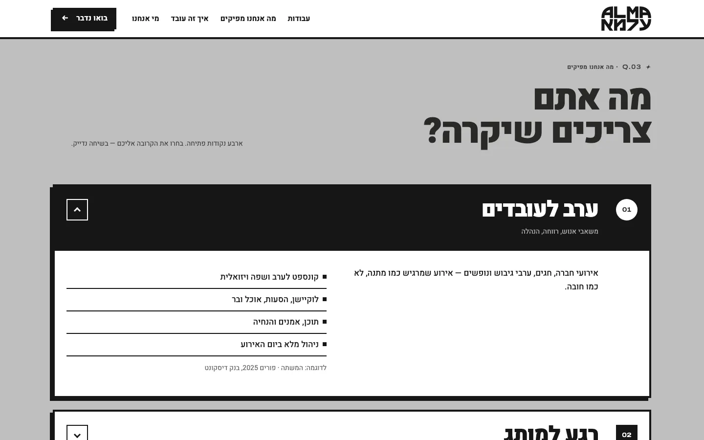
Desktop · services
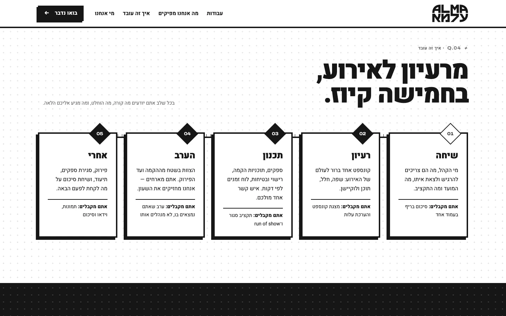
Desktop · process
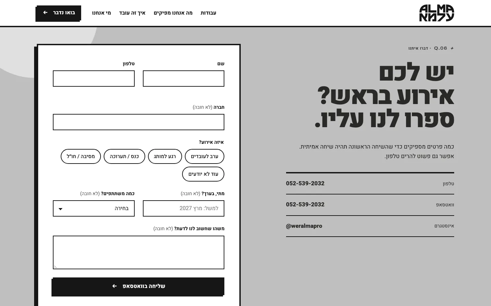
Desktop · contact
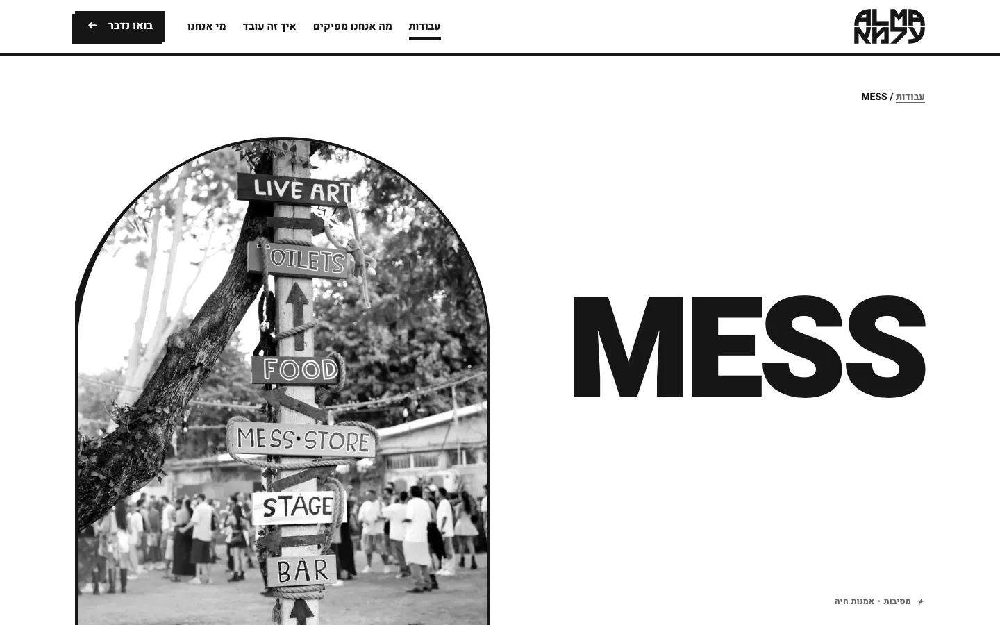
Desktop · project page
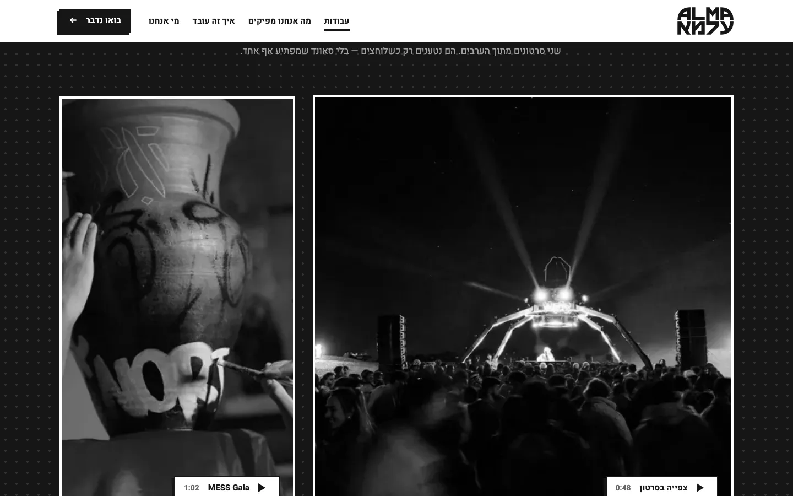
Desktop · project, execution chapter
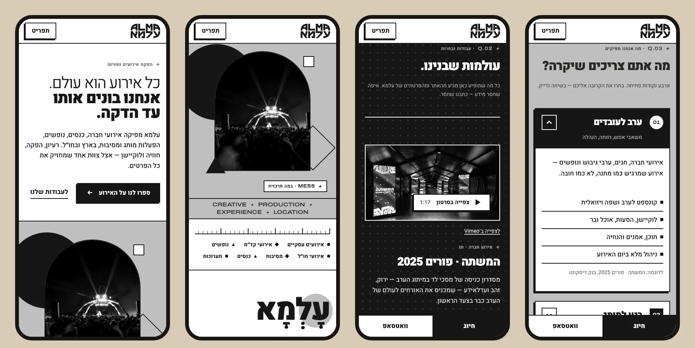
Mobile (390px) · opening, work, services, process
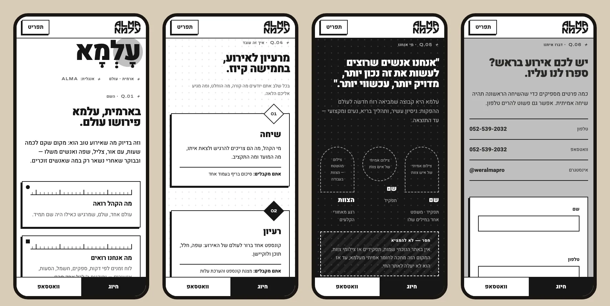
Mobile · name, people, contact, form
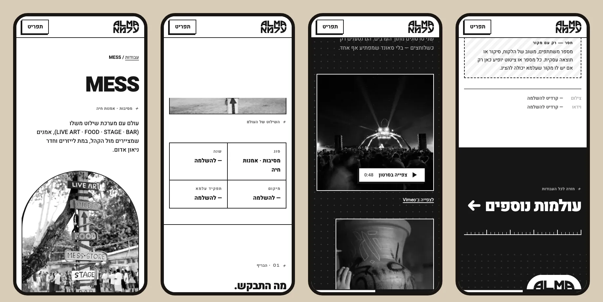
Mobile · project page06 · Implementation & handoff
A working build, ready to port.
Stack: static HTML, one CSS file of tokens and components, and 6.5KB of unminified vanilla JS. No frameworks. It is RTL-native and uses logical CSS properties throughout.
Media: 17 images re-encoded to WebP at 800/1600px using srcset, 2.4MB on disk across both sizes; each visitor downloads only one size per image. Images below the fold load lazily, and the hero image is preloaded.
Video: a facade pattern. A poster and play button show until the visitor clicks; only then does the Vimeo player load, with sound. There’s no autoplay, and a plain Vimeo link is always present as a fallback. Recommended: a self-hosted, muted 6–8s hero loop (MP4/WebM with a poster) once ALMA supplies source files.
Form:not connected to a server. It validates (name and phone required), then opens WhatsApp with the brief pre-written; the visitor still presses send. The page never claims a message was sent, and a disclosure sits under the button. Before launch: connect it to a form service or WordPress endpoint, add email delivery, a privacy notice and spam protection.
CMS: the current site runs on WordPress/Elementor. Recommended path: a light custom WordPress theme using these templates, with a Project post type whose fields are brief, idea, execution, outcome, year, role, credits and media. That way a project can’t be published without its facts.
Fonts: loaded from Google Fonts in the prototype. Self-host them in production for privacy and speed.
Review layer: the dark top bar and the dashed “missing” blocks belong to the prototype. Remove them, together with any section still empty, before launch.
For each project: ALMA’s role, year, location, the brief, the idea in the team’s words, the outcome, any figures with a source, and the client’s permission to be named.
Credits: photographers and videographers. The Vimeo films are uploaded under the name “Amir Sonnenberg”, whose role is unconfirmed. One photo carries a photographer watermark.
Team: names, roles, real portraits and on-site photos, and the founding story. Nothing about the team is on the current site, so nothing was written.
Labels for 8 archive photos (desert, yoga hall, pool, concerts, lounge).
Decisions on sensitive material: the President Herzog photograph and the hostages exhibition.
Source files: vector logo (only PNGs exist), original video files, high-resolution photos.
Business details: email address, legal name, service area. Also a form endpoint, privacy policy and accessibility statement.
Testimonials: none exist, and none were written.
Checks actually performed
Check
Result
Fetched almapro.co.il and extracted all text, media and links
Done. One page, 24 original images, 4 Vimeo IDs. Posters mapped to films by DOM order; titles and durations from Vimeo oEmbed.
Instagram @weralmapro
Not reviewed. The link resolves (200), but its content was not read.
Web search for other public facts
Found only a different company (elmapro.co.il). Excluded.
Font licences
OFL 1.1 confirmed in the google/fonts repository for all three families.
Colour contrast (WCAG formula, computed)
Pass. Every text pairing used is ≥ 4.5:1 (lowest: #666666 on white, 5.74:1).
Desktop 1440×900 and mobile 375×812 (Chromium pane)
Pass. No horizontal overflow at 375px (scrollWidth 375). Mobile renders at 390px through headless Chrome.
Links
Pass. All anchors resolve, all local pages return 200, and all external links (4× Vimeo, WhatsApp, Instagram) return 200. Every new-tab link has rel=noopener and a screen-reader “opens in new window” note.
Semantics
Pass. One H1 per page, alt text on every image, a label on every input, no unnamed buttons, a skip link, landmarks.
Mobile menu
Pass. Opens and closes, aria-expanded updates, Escape closes it and returns focus.
Form
Pass. An empty submit shows inline errors and focuses the first invalid field. A valid submit builds the WhatsApp URL; window.open was intercepted in the test, so nothing was sent.
Video facade
Pass. The Vimeo iframe loads on click and plays (seen in the pane).
Bugs found and fixed during QA
Clipped arches never triggered IntersectionObserver; a margin collapse left a pale strip; a Latin word list reordered inside Hebrew text; ordered-list markers leaked into the process track; Hebrew labels were letter-spaced.
Not checked
Real iOS Safari and Android devices, a full screen-reader pass (VoiceOver/NVDA), Lighthouse performance scores, and whether Vimeo restricts embedding on ALMA’s production domain.
Self-critique
Could another producer swap in their logo? Not without the design breaking. The opening line, the עָלְמָא = עולם section and the arch (taken from ALMA’s own logo container) all depend on the name. Under another company’s logo, the Aramaic section is meaningless and the arch arbitrary. On top of that, the logo, the ✦ sparkle, the strip and the black-and-white arches are ALMA’s own identity, so the page is unmistakably theirs. The transferable part is the precision vocabulary (cues, ticks). On its own that is generic, so it is deliberately the second voice, and the name section was placed directly after the hero so the idea comes before the work.
Can a visitor quickly see what ALMA does, see evidence, and find a way to contact? What ALMA does is in the hero subline. Named clients (Discount Bank, Avène, MESS) appear within one scroll. There are four contact routes: the header CTA, the hero CTA, the sticky mobile call/WhatsApp bar and the form. The remaining weakness is content, not design. The evidence has no outcomes, and the People section is empty. That section must be filled or hidden before launch, because a page that claims “we are people” and then shows empty frames undermines itself.